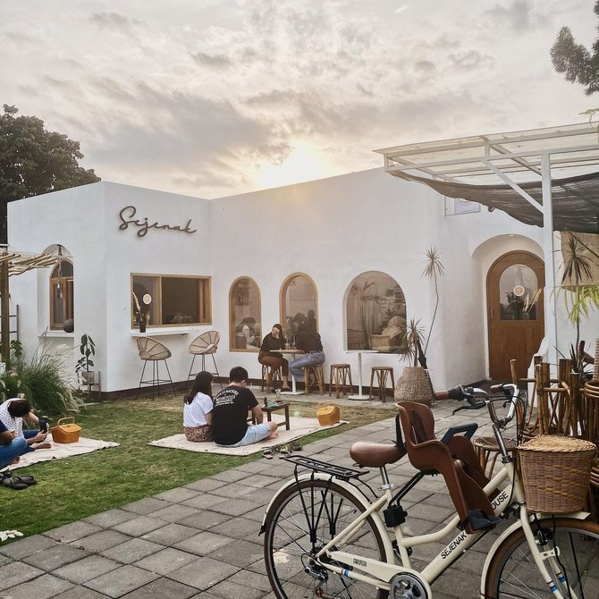
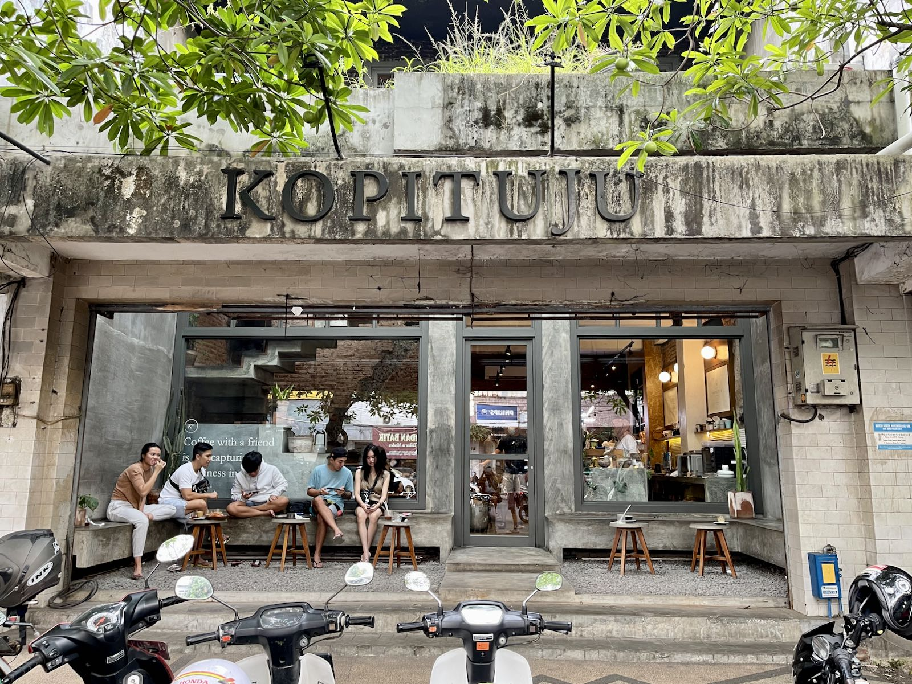

1. Sejenak Coffee
Sejenak Coffee di Malang menawarkan suasana tenang dan nyaman, cocok untuk kamu yang ingin rehat sejenak dari kesibukan kota. Dengan interior minimalis yang hangat dan kopi berkualitas, tempat ini ideal untuk bersantai, bekerja, atau menikmati waktu bersama teman. Menu kopi andalan dan pilihan pastry menjadikan Sejenak Coffee destinasi yang menarik bagi para pencinta kopi.
2. Kopi Tuju
Kopi Tuju di Malang adalah coffee shop yang menawarkan pengalaman ngopi dengan suasana modern dan cozy. Tempat ini terkenal dengan kopi berkualitas dari biji pilihan yang diracik oleh barista berpengalaman. Selain itu, Kopi Tuju juga memiliki area yang nyaman untuk bekerja atau bersantai, lengkap dengan Wi-Fi dan colokan listrik. Dengan desain interior yang minimalis namun estetik, Kopi Tuju sering menjadi pilihan bagi para pecinta kopi yang mencari tempat hangout atau bekerja dengan tenang.
3. 8 Oz Coffee Studio

Rekomendasi cafe di Malang untuk nugas berikutnya adalah 8 Oz Coffee Studio yang menawarkan konsep cafe minimalis modern dengan banyak tanaman hijau. 8 Oz Coffee Studio memiliki area merokok dan no-smoking yang terpisah. Cafe satu ini memiliki suasana yang sepi, tenang, dan tiap meja letaknya cukup berjauhan. Cocok untuk meeting ringan, bekerja, dan nugas.